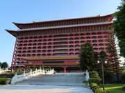
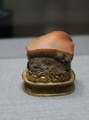
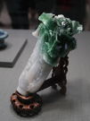
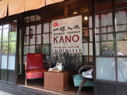
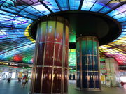

On the first day, we went to Shifen and let loose a lantern with our message in the sky as the famous event there.
Although we were the second to stay at well-known The Grand Hotel, Maruyama Hotel, which is run by the government. The hotel is a big Chinese style building with big and fantastic entrance and hall decorating beautiful carving. The room is not only large enough but also the big terrace which forms the appearance of the building consists of big guardrail and pillar painted by red japan.


On the second day, at first we visited National Palace Museum as usual. When we came before, we couldn't be allowed to take picture in the museum. But this time, as long as we have no flash we could take picture, so I took some picture, especially for famous Jadeite Cabbage, Chinese cabbage and cricket, and Meat-shaped Stone..At the Grand Hotel we had breakfast which was buffet style with many kind of food, and lunch serviced by helper, but in spite of our hope they disappointed us in the taste although we expected too much for them.

Watching at a DVD on the bus, I knew the name of The Chiayi Agriculture and Forestry Public School for the first time. The movie title is KANO abbreviated for that school in Japanese. It was a miracle baseball team story. The team member consisted of Japanese, Taiwanese and local race and the manager from Japan led them well. Finally they represented Taiwan in the 1931 Japanese High School Baseball Championship at Koshien Stadium and surprisingly won the second place. The movie showed us how they were a good team getting along with different races and how people helped them. It left a strong impressed on me. The story, of cause nonfiction, is very similar to Kanaashi Agriculture high school that won second place in 2018 as you know, which gave me more excitement.

On the bus we saw the second DVD, Patten Rai. It is about the irrigation of Chianan Plain whose area is one sixth of Taiwan. Although the area is big enough, north-south 110 km and east-west 71 km, to make a lot of grain, it had been called a barren ground for three disasters, flood disaster, drought and salt damage. The government controlled by Japan accepted Hatta Yoichi plan to develop the area. Making a lot of effort and taking a great pain, finally he accomplished Chianan Irrigation, Kanan-Taishu, in 1930. It took a decade to built Hatta dam, and waterway which was the half earth diameter long in all. Even though that era America let the building technology for dam, he used the original new technology after studying a lot. Surprisingly he made about 3 km tunnel through mountains to lead water and to reserve water in the dam, which was the biggest dam in orient that time. However the water of the dam was not enough to fill up the whole plain and it could supply no more than one third area with water. The plain were divided in three area and the dam supplied water to each area every three year. People planted rice in the fist year getting water, and in the second year planted sugar cane which don't need much water, and planted minor grains in the third year. As a result, the rice was increased 6 times, the sugar cane was increased 4 times and the output became 11 times. He really hoped all people to be made happy.
I was not interested in any tourist spots this time except for staying and having food at the Grand Hotel, and looking around Jiufen. Before coming I worried about the weather but we had almost good weather to see around places for sightseeing. However I was disappointed with Taiwan food at first but on the third day breakfast, lunch and dinner were nice as same as before I had come. After watching DVD the more I knew Hatta Dam, Wushantou Dam, the more I wanted to see it, so I decided to go there in some year.
Anyway we enjoyed traveling this time, too.
{kind=link}
{kind=link}
{kind=link}
{kind=link}
{kind=link}